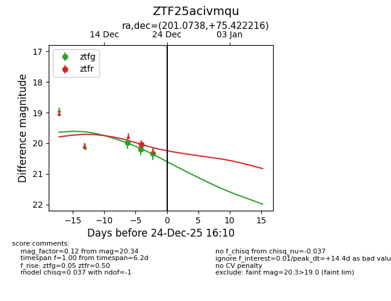
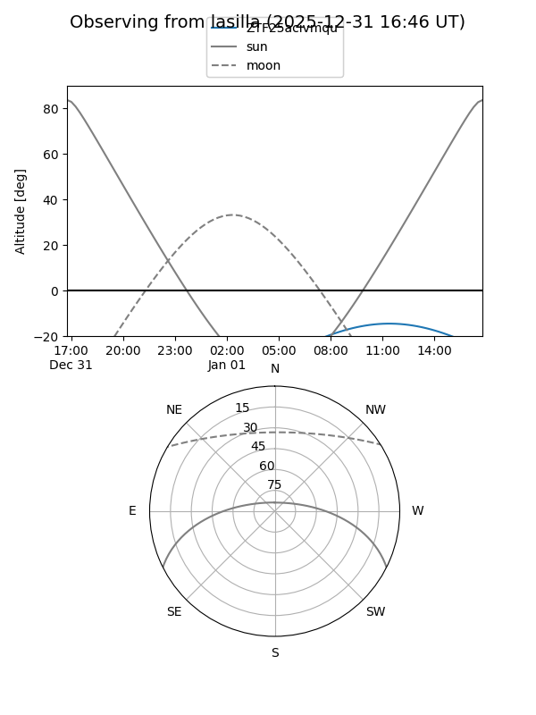
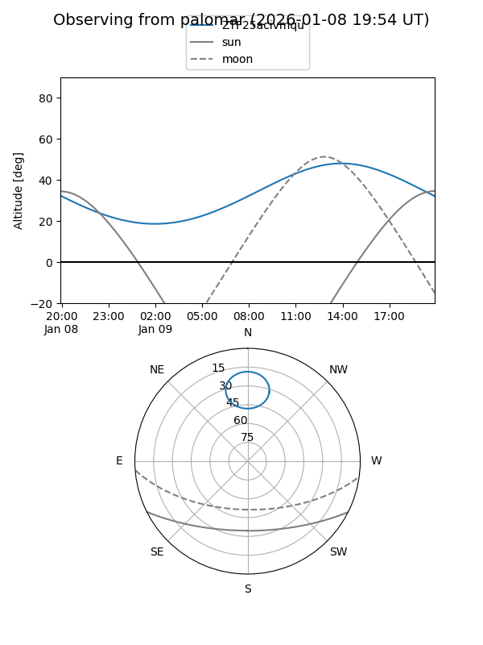

ZTF25acivmqu
Target ZTF25acivmqu at 2025-12-31 17:00
Aliases and brokers:
FINK:
Lasair:
ALeRCE:
alt names
ZTF25acivmqu (ztf,fink_ztf)
Coordinates:
equatorial (ra, dec) = 201.0738,+75.42222
equatorial (HMS+DMS) = 13:24:17.72,+75:25:19.98
galactic (l, b) = (120.1785,+41.52990)
Flags:
Photometry:
last ztfg=20.34, ztfr=20.03
3 ztfg, 1 ztfr detections
Lightcurve

Visibility


Additional plots